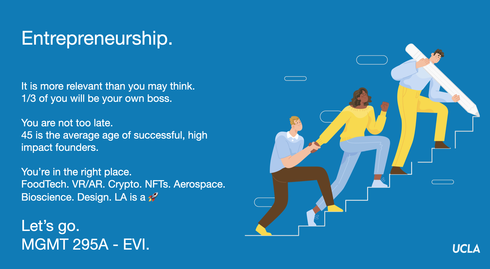

Jane Wu
Assistant Professor
UCLA Anderson

jane.wu (a) anderson.ucla.edu
110 Westwood Plaza
Los Angeles, CA 90095
Current Teaching
MGMT 295A - Entrepreneurship and Venture Initiation 1 out of 3 of you will be your own boss at some point in your life -- and that doesn't include those of you that will join, invest in, or advise a startup, small business or spin-off! Whether you already have a startup pitch deck, a side hustle or just an inkling that you'd like to try one day, this class will equip you with a research-backed toolkit to help you take an idea and build it into an impactful company. The course consists of case discussions, lectures, guest speakers and a course-long startup project.
"I would recommend this class to everyone in the MBA program! Prof. Jane brought amazing guest speakers and facilitated great conversations among students and that was really helpful for learning. It was one of the best classes I have taken at Anderson!!!!! Highly recommend it to everyone." "This was one of my favorite classes at Anderson. The professor was very effective and made each class enjoyable."
"I loved this course. It elucidated many confusions I've had about entreneurship and VC, and taught me skills that I will be able to use in the future whether I start my own company or run a pod within an established company." "I really enjoyed taking this class, especially because I loved seeing Professor Jane's passion for entrepreneurship." "Loved this class! Professor Wu has great energy and organized a well–structured course. The assignments were applicable to being a real entrepreneur." "Presenting my business idea formally in the classroom has been one of the best experiences of my MBA journey so far." "This is the best class I have ever had at Anderson. The classes were very interactive, we read cases and discussed them on the class, and exchange feedbacks from our classmates which boosts our interest in the subject." "The professor is energetic and engaging, the course content is well–organized and concise, and her delivery is clear. I think this course is a perfect intro to entrepreneurship. I like the designs that allow us to step by step explore the formation of a business!" "Amazing enthusiasm during each session, this made me more excited to take part in classroom discussions." "Love this course! Pretty useful and bottom–up. Not only theories but also examples to understand how to really start a business."
UCLA Anderson MBA
Price Center for Entrepreneurship & Innovation
Upcoming: Fall Quarter 2025, Section 1
Past sessions: Winter Quarter 2023, Spring Quarter 2024, Winter Quarter 2025
Class Description
Class Testimonials

Coming in Fall 2025! - Tough Tech Commercialization Capstone (NEW)
UCLA Anderson MBA (2nd year only)
Email Lively for application details.
Anchored in the principles of innovation and technology strategy, this capstone blends academic rigor with practical application. You will engage with frameworks from technology strategy, innovation management, and entrepreneurial finance, while analyzing recent cases across emerging areas such as space, biotech, AI, and more. The course moves from evaluating ideas and opportunities to de-risking each of the four core areas of risk that tough tech ventures face: technology risk, market risk, regulatory risk, scale risk, and financing risk. You will then synthesize this knowledge into a comprehensive commercialization approach—an “entrepreneurial strategy” for your venture.
Past Teaching
MIT Sloan Experience
Global Strategy, MIT Sloan Executive MBA
(TA for Hiram Samel)
Competitive Strategy, MIT Sloan Executive MBA
(TA for Pierre Azoulay and Scott Stern)
Innovation-Driven Entrepreneurial Advantage Lab, MIT Sloan EMBA
(TA for Fiona Murray and Phil Budden)
Innovation Driven Advantage, MIT Sloan Fellows
(TA for Scott Stern and Erin Scott)
Introduction to Technological Entrepreneurship, MIT Sloan MBA
(TA for Scott Stern)
Product and Service Development in the Internet Age, MIT Sloan MBA and Undergraduate
(TA for Eric von Hippel)